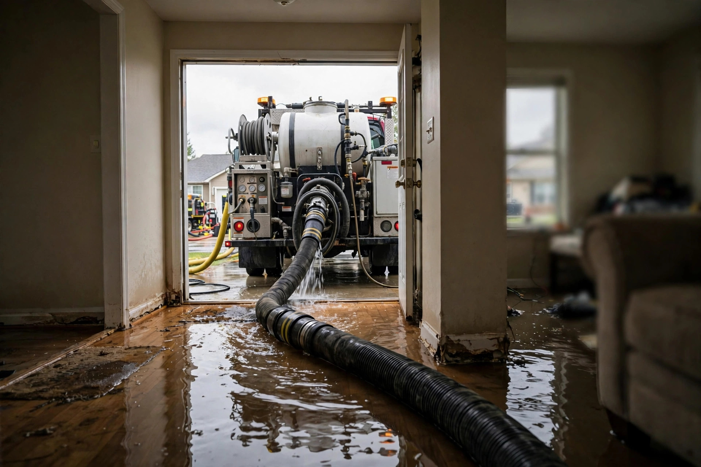

Home / Water Damage / Emergency
Meridian, Idaho · 24/7 responseWater is coming in. We move fast.
Every hour standing water sits, it climbs higher into drywall, subfloor, and framing. Emergency water removal gets the water out now — extraction first, questions later.
Urgent water questions, answered directly
How fast can you get here?
Call (321) 985-3339 and we'll give you a straight arrival window based on where the crew is. For active flooding, the phone guidance on shutting off water starts immediately — you don't wait for the truck.
Should I start mopping before you arrive?
Move valuables and take photos, but leave the heavy extraction to the equipment. Household wet-vacs can't match truck-mounted suction, and wading through contaminated water isn't worth the risk.
Will my floors be ruined?
It depends on the material and how long it stayed wet. Tile and concrete usually survive; laminate and carpet pad often don't. We assess after extraction and tell you honestly what's salvageable.
Do you work with insurance?
We document moisture readings, photos, and equipment logs that adjusters need. You file the claim — we give you the paperwork to support it.
Is the water dangerous?
Clean supply-line water is one thing; water that's passed through a water heater, dishwasher, or storm drain is another. Treat all standing floodwater as contaminated until assessed — keep kids and pets clear.
While you wait: do these three things
- Stop the source — main shutoff for plumbing; towels at the door for intruding stormwater.
- Kill power to wet areas — flip breakers for rooms with standing water. Water and electricity are a bad combination.
- Move what matters — rugs, electronics, and important papers to dry ground. Don't wade into deep water to save replaceable items.
- Don't run the HVAC — a wet system spreads moisture and contaminants through every duct in the house.
- Take photos — document everything before cleanup for insurance. Wide shots first, then close-ups.
A Saturday ice-maker line in Bridgetower
The family left for a weekend trip Friday evening. The refrigerator's plastic water line split sometime Saturday, and by Sunday night the kitchen, dining room, and hallway were under an inch of water that had wicked a foot up the drywall. Extraction pulled the standing water in hours; drying took four days with the toe-kicks removed so air reached under the cabinets. The lesson the owners took home: braided steel lines on every appliance, and a shutoff everyone in the house can find.
Sources: EPA — Mold, Moisture & Your Home
What happens when you call
Shut the water off
If it's a burst pipe or appliance line, we'll talk you through finding your main shutoff while help is on the way. Meridian's newer homes typically have it in the garage or near the water heater.
Extraction begins
Truck-mounted and portable extractors pull standing water from floors, carpet, and hard surfaces. The bulk of the water comes out in the first pass.
Moisture mapping
Meters and thermal imaging find where water traveled — inside walls, under flooring, into the subfloor. What you can't see decides the drying plan.
Structural drying
High-velocity fans and commercial dehumidifiers operate for days with daily moisture checks until framing and drywall reach dry standards. Rushing this step is how mold starts.
Clearance and next steps
Final readings documented. If drywall or flooring needs replacement after drying, you'll know exactly what and why.

Meridian's most common water emergencies
Supply line bursts
Toilet and ice-maker supply lines are the top offenders in 2000s-era Meridian homes. A failed line can dump gallons per minute while you're at work — plastic lines age out faster than braided steel.
Water heater failures
Tanks in garages and utility closets corrode from the inside. When one lets go, forty-plus gallons spread across the floor in minutes, wicking straight into adjacent drywall.
Irrigation and stormwater intrusion
Heavy spring runoff and summer cloudbursts overwhelm grading on newer lots near Ten Mile Road. Water finds window wells and foundation joints first.
Upstairs laundry overflows
Second-floor laundry rooms — standard in Meridian two-stories — turn a washer malfunction into a two-floor event. Gravity does the rest.
Don't wait — water doesn't.
Call now. We'll talk you through the shutoff while help rolls.